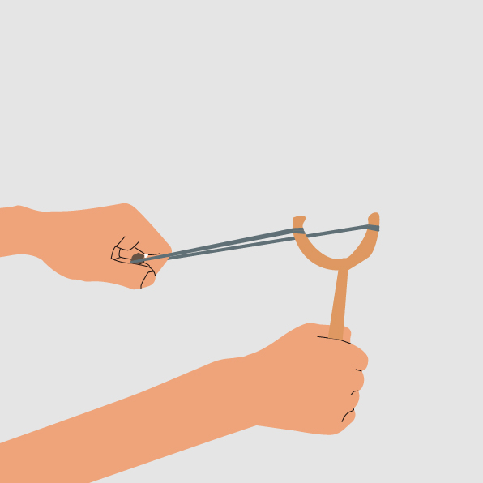
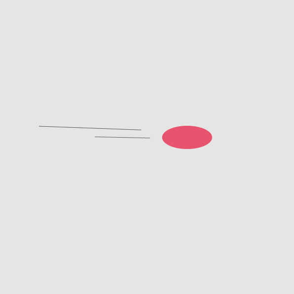
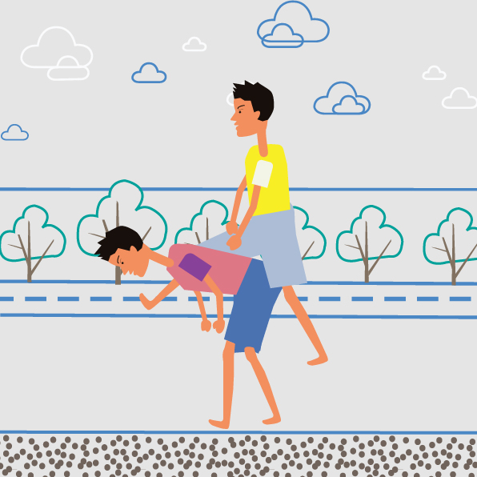
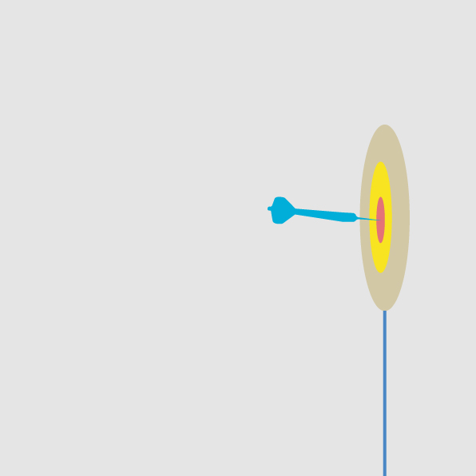
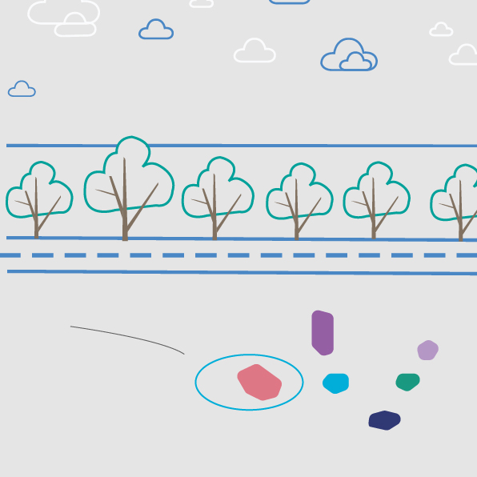
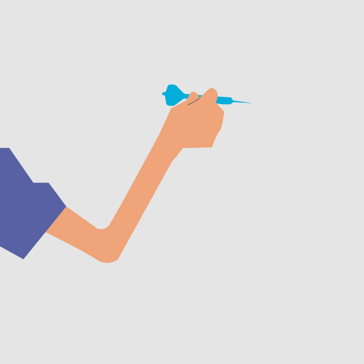

LOGO
目录
眼睛
嘴巴
手脚
大脑
耳朵






定飞镖 旧时传统儿童游戏，在二十世纪六七十年代盛行于全中国。 玩家手捏顶头是"U"字形的铁棍或铁丝，推一个直径50厘米左右的黑铁环向前跑。有的还在铁环上套两三个小环，滚动时更响亮。用铁丝做一个圈，然后再做一个长柄的铁钩子，推着这个铁丝圈滚着走。 孩子们右手持着长柄，将其搭上铁环，手上的力量通过长柄的钩子传递到铁环上，促使铁环快速地滚动。孩子跟在铁环后头快速奔跑起来，只有这样，他才能跟上铁环。孩子加大手上的力量，那个钩子起到了轴承般的作用，从而推动着铁环。由于铁环的惯性，孩子手上的长柄也随着铁环的滚动而做着圆周运动， 滚铁环的关键之处在于掌握好平衡。 滚铁环自娱性强，荷兰的运动专家在1976年指出滚铁环比赛有助于提高人体的平衡性、肢体的协调以及眼力，可以提高四肢活动能力，最重要的是它让孩子们享受运动的乐趣，有一个无忧的童年。廉价而又方便实用的铁环，不限场地，随处可玩，运动量大而又灵活多变，能让孩子在游戏中运动，在运动中成长，给他强健的体魄，灵巧的身躯，顽强的意志和过人的精力。